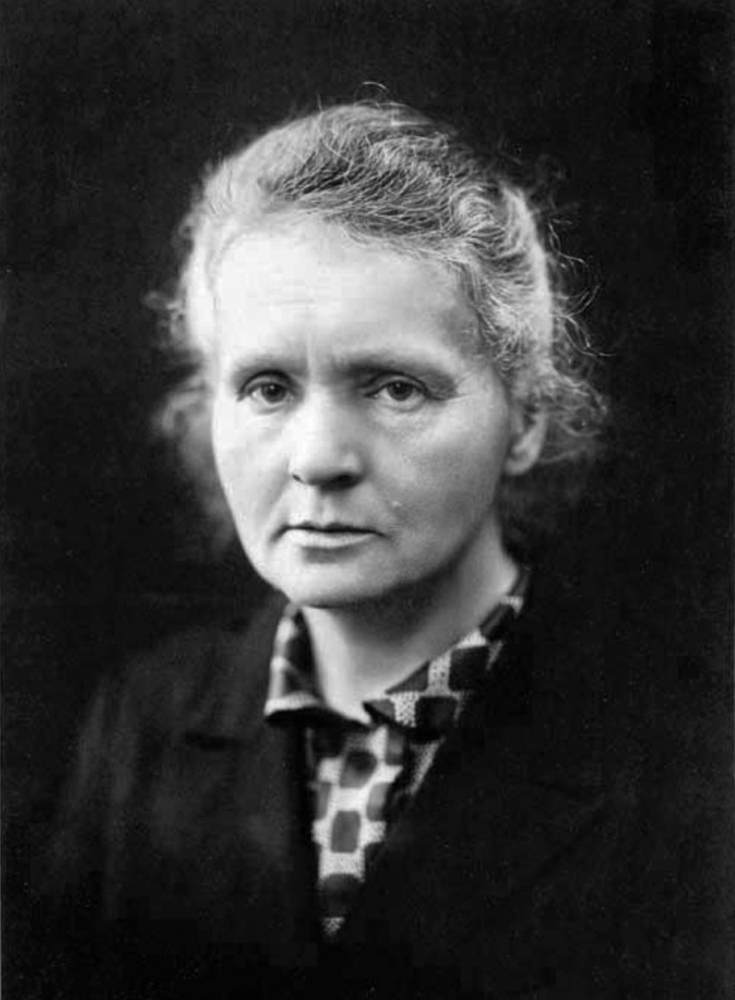
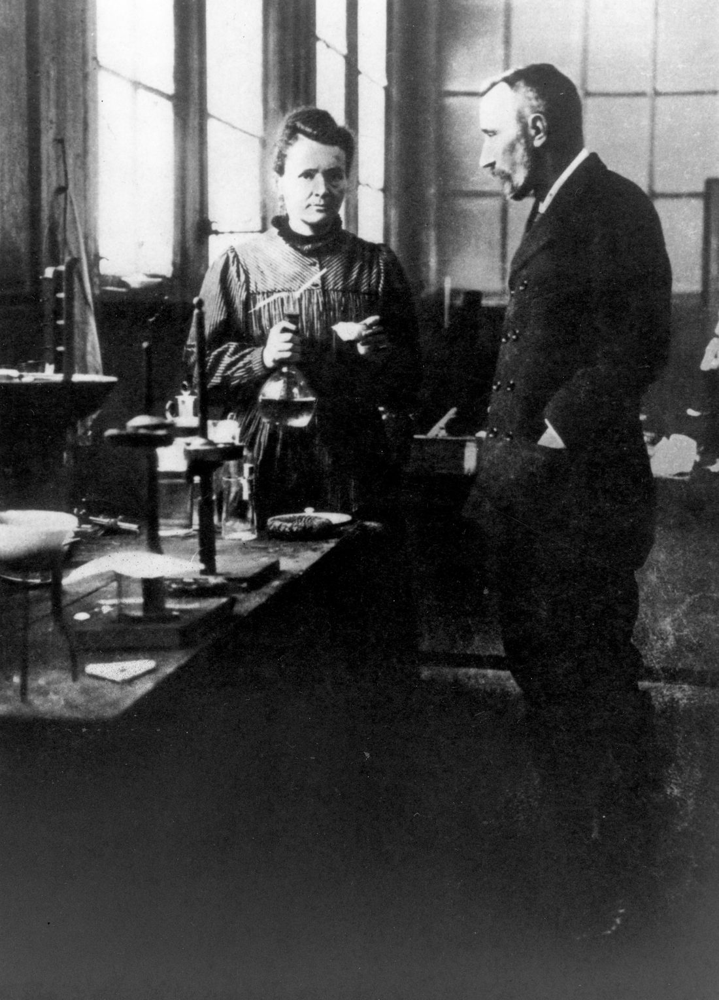
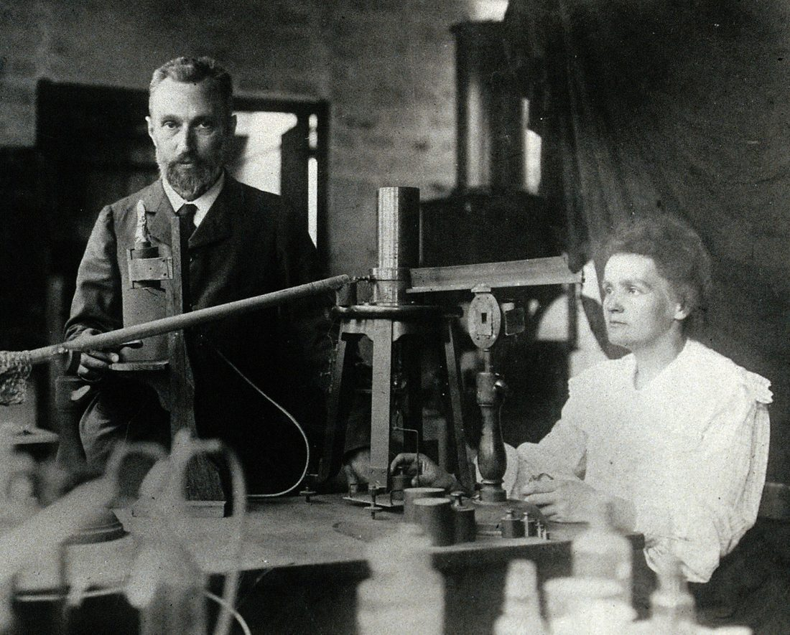
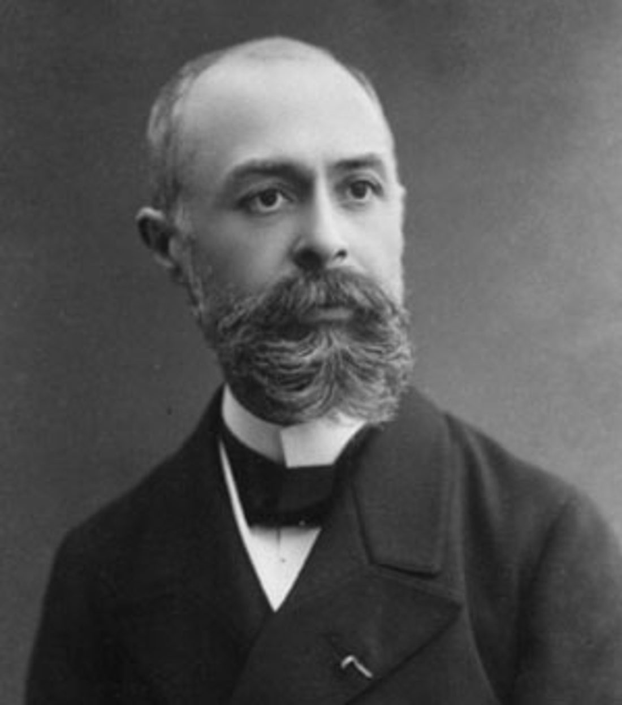
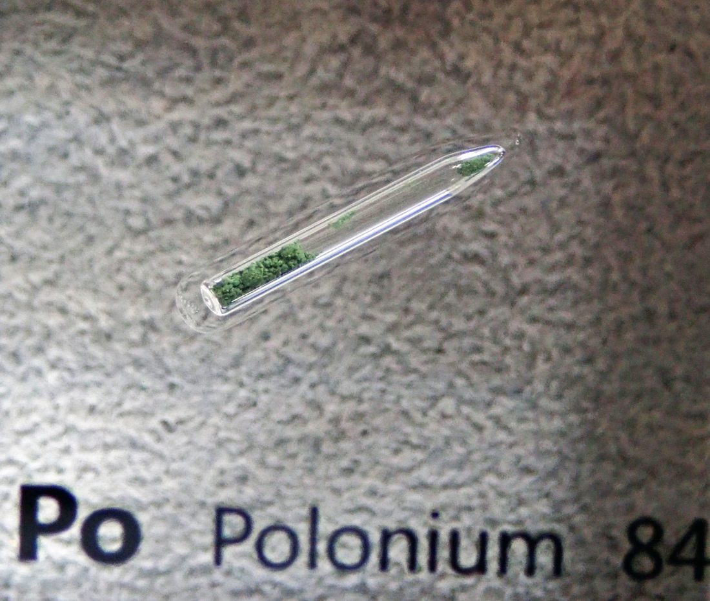
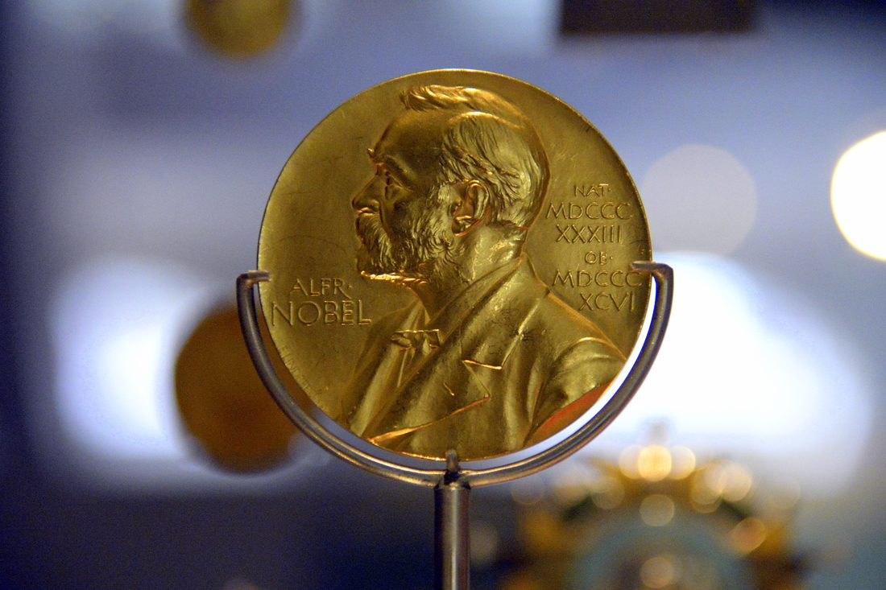
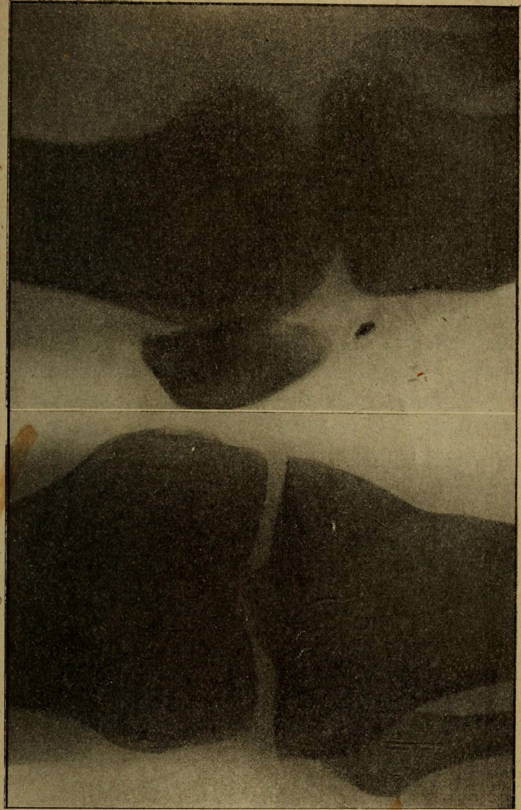

11 月 7 日，玛丽·斯克沃多夫斯卡出生。当时波兰受外族统治，她后来赴巴黎求学。

她进入巴黎大学学习物理与数学，开始接触当时最前沿的辐射研究。

她与物理学家皮埃尔·居里结婚，二人成为放射性研究的黄金搭档。

贝克勒尔发现铀盐的射线；玛丽决定系统研究这种“放射性”现象。

她从沥青铀矿中分离出第一种新元素钋，献给祖国波兰。
同年又发现放射性更强的镭，为证实它必须拿到纯样品。
历经数年苦工，他们从数吨矿渣中制得约 0.1 克氯化镭，坐实物证。

因放射性研究获诺贝尔物理奖，玛丽成为首位诺奖女性得主。
皮埃尔遇车祸去世，玛丽接任其教席，继续推进研究。
因发现镭、钋两元素获诺贝尔化学奖，成为首位两获诺奖者。

一战期间她组织移动 X 光车上前线，为伤员定位弹片，挽救无数生命。
7 月 4 日，她因长期辐射暴露导致的再生障碍性贫血去世，享年 66 岁。
法国政府把她的灵柩移入巴黎先贤祠，她成为首位凭自身成就入葬于此的女性。
读放射性：原子自己在放东西 → 读镭：从矿渣里淘出的光 → 读衰变与半衰期：放射会变弱 → 读把射线用于人：医学与战时 →